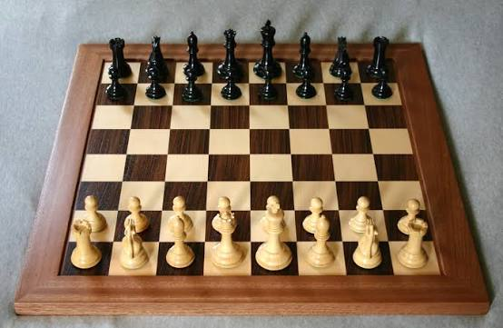

Почему я люблю шахматы

Шахматы - это игра, в которой нет случайности: всё зависит только от тебя и твоего соперника. Я люблю играть в шахматы в свободное время.
На этом сайте три страницы: главная, история игры и страница с полезными скриптами на JavaScript.
Содержание
Что мне нравится
- Развивает логику и память
- Можно играть онлайн с кем угодно
- Каждая партия не похожа на предыдущую